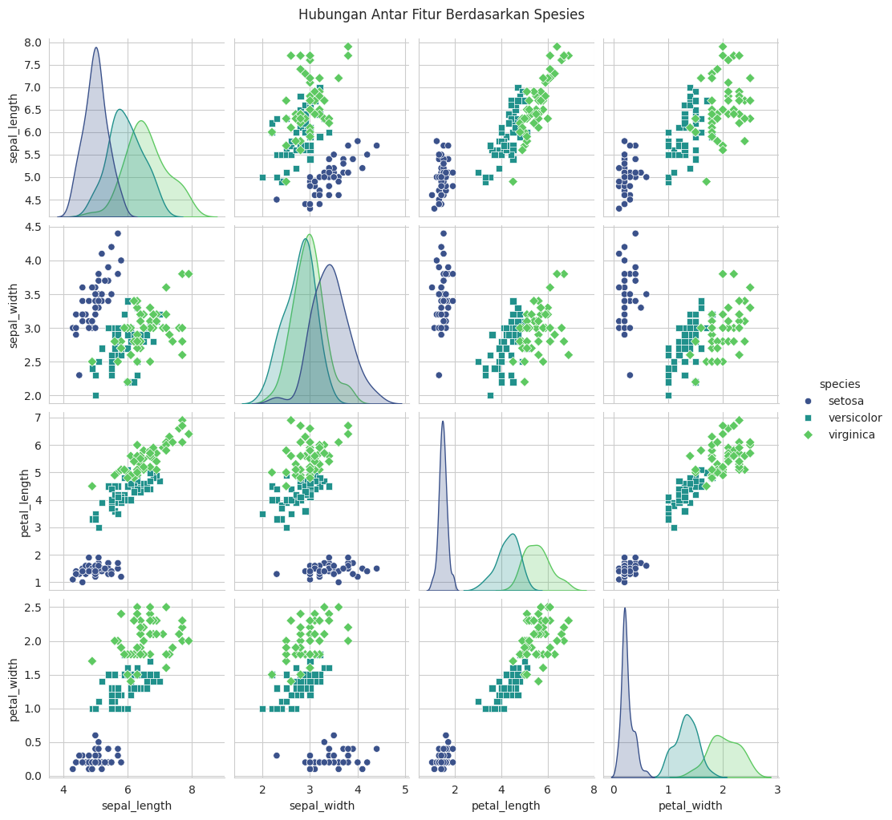
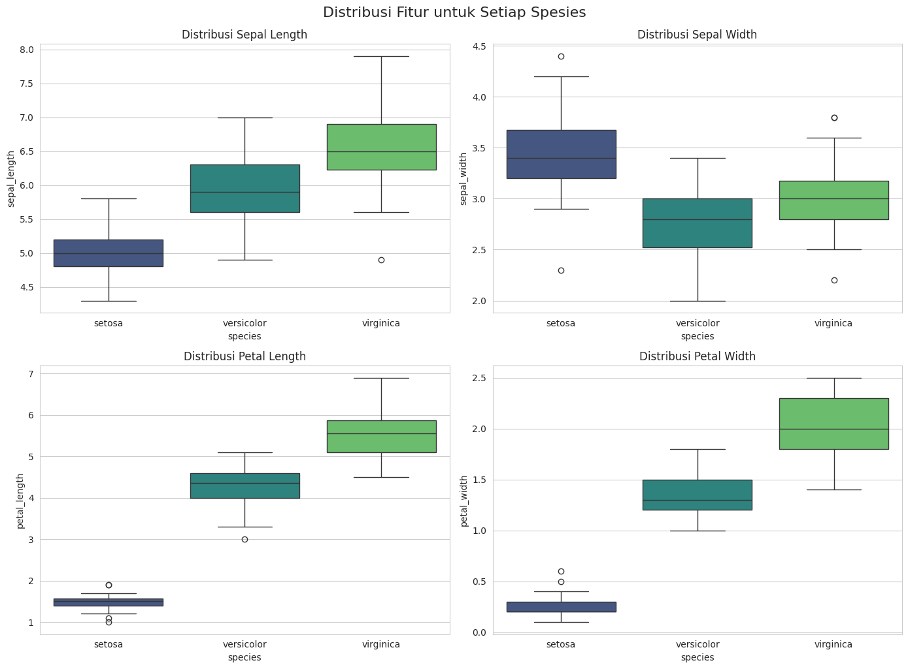
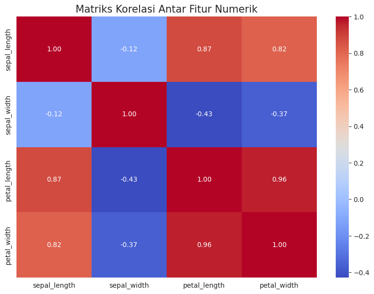

📖 Data Understanding: Analisis Komprehensif Dataset Iris#
Tujuan Proyek#
Tahap ini bertujuan untuk melakukan pemahaman data (Data Understanding) secara mendalam pada Dataset Iris. Skenario yang digunakan adalah data Iris yang terpisah di dua sistem database berbeda dan perlu diintegrasikan sebelum dianalisis.
Database 1 (MySQL): Menyimpan data
id,species, dan pengukuran sepal (sepal_length,sepal_width).Database 2 (PostgreSQL): Menyimpan data
id,species, dan pengukuran petal (petal_length,petal_width).
Tujuan kita adalah menggabungkan data ini, memverifikasi kualitasnya, dan melakukan analisis data eksploratif (EDA) untuk mendapatkan wawasan kunci.
Dataset: Bunga Iris#
Dataset ini adalah salah satu dataset paling terkenal dalam dunia machine learning. Berisi 150 sampel dari tiga spesies bunga Iris (Setosa, Versicolor, dan Virginica). Untuk setiap sampel, empat fitur diukur: panjang dan lebar kelopak (petal) dan daun mahkota (sepal).

Langkah 1: Pengumpulan & Integrasi Data 🤝#
Langkah pertama adalah mengambil data dari kedua sumber dan menggabungkannya menjadi satu DataFrame yang utuh. Untuk tujuan demonstrasi ini, kita akan mensimulasikan pengambilan data ini dengan membuat dua DataFrame terpisah.
import pandas as pd
import numpy as np
import seaborn as sns
import matplotlib.pyplot as plt
from sklearn.datasets import load_iris
# --- Simulasi Pengambilan Data ---
# Memuat dataset Iris asli dari scikit-learn untuk data yang realistis
iris = load_iris()
df_full = pd.DataFrame(data=iris.data, columns=iris.feature_names)
df_full['species'] = [iris.target_names[i] for i in iris.target]
df_full['id'] = range(1, len(df_full) + 1)
# 1. Mensimulasikan data dari Database MySQL (Sepal) 🗄️
print("Simulasi data dari MySQL (Pengukuran Sepal)...")
df_mysql = df_full[['id', 'species', 'sepal length (cm)', 'sepal width (cm)']].copy()
# Mengubah nama kolom agar lebih sederhana
df_mysql.rename(columns={
'sepal length (cm)': 'sepal_length',
'sepal width (cm)': 'sepal_width'
}, inplace=True)
print(df_mysql.head())
print("-" * 50)
# 2. Mensimulasikan data dari Database PostgreSQL (Petal) 🐘
print("Simulasi data dari PostgreSQL (Pengukuran Petal)...")
df_postgres = df_full[['id', 'species', 'petal length (cm)', 'petal width (cm)']].copy()
# Mengubah nama kolom
df_postgres.rename(columns={
'petal length (cm)': 'petal_length',
'petal width (cm)': 'petal_width'
}, inplace=True)
print(df_postgres.head())
print("-" * 50)
# 3. Menggabungkan kedua DataFrame menjadi satu
print("Menggabungkan kedua dataset...")
df_iris = pd.merge(df_mysql, df_postgres, on=['id', 'species'], how='inner')
print("\nData berhasil digabungkan!")
print("Lima baris pertama dari data gabungan:")
display(df_iris.head())
Simulasi data dari MySQL (Pengukuran Sepal)...
id species sepal_length sepal_width
0 1 setosa 5.1 3.5
1 2 setosa 4.9 3.0
2 3 setosa 4.7 3.2
3 4 setosa 4.6 3.1
4 5 setosa 5.0 3.6
--------------------------------------------------
Simulasi data dari PostgreSQL (Pengukuran Petal)...
id species petal_length petal_width
0 1 setosa 1.4 0.2
1 2 setosa 1.4 0.2
2 3 setosa 1.3 0.2
3 4 setosa 1.5 0.2
4 5 setosa 1.4 0.2
--------------------------------------------------
Menggabungkan kedua dataset...
Data berhasil digabungkan!
Lima baris pertama dari data gabungan:
| id | species | sepal_length | sepal_width | petal_length | petal_width | |
|---|---|---|---|---|---|---|
| 0 | 1 | setosa | 5.1 | 3.5 | 1.4 | 0.2 |
| 1 | 2 | setosa | 4.9 | 3.0 | 1.4 | 0.2 |
| 2 | 3 | setosa | 4.7 | 3.2 | 1.3 | 0.2 |
| 3 | 4 | setosa | 4.6 | 3.1 | 1.5 | 0.2 |
| 4 | 5 | setosa | 5.0 | 3.6 | 1.4 | 0.2 |
Langkah 2: Inspeksi & Verifikasi Data 🧐#
Setelah data digabungkan, kita perlu memeriksa struktur, tipe data, dan kualitasnya secara keseluruhan.
Informasi Dasar & Kualitas Data#
Kita akan menggunakan .info() untuk mendapatkan ringkasan cepat tentang DataFrame, termasuk jumlah entri, kolom, nilai non-null, dan tipe data.
print("--- Informasi Dasar DataFrame ---")
df_iris.info()
--- Informasi Dasar DataFrame ---
<class 'pandas.core.frame.DataFrame'>
RangeIndex: 150 entries, 0 to 149
Data columns (total 6 columns):
# Column Non-Null Count Dtype
--- ------ -------------- -----
0 id 150 non-null int64
1 species 150 non-null object
2 sepal_length 150 non-null float64
3 sepal_width 150 non-null float64
4 petal_length 150 non-null float64
5 petal_width 150 non-null float64
dtypes: float64(4), int64(1), object(1)
memory usage: 7.2+ KB
Interpretasi:
Entri: Terdapat 150 entri, sesuai dengan standar dataset Iris.
Kolom: Terdapat 6 kolom, sesuai dengan yang kita harapkan.
Nilai Non-Null: Semua kolom memiliki 150 nilai non-null. Ini adalah berita bagus, artinya tidak ada data yang hilang (missing values).
Tipe Data: Tipe data sudah sesuai (
int64untuk id,objectuntuk species, danfloat64untuk pengukuran).
Statistik Deskriptif#
Fungsi .describe() memberikan ringkasan statistik untuk semua kolom numerik. Ini membantu kita memahami tendensi sentral, sebaran, dan rentang data.
print("--- Statistik Deskriptif Fitur Numerik ---")
display(df_iris.describe().round(2))
--- Statistik Deskriptif Fitur Numerik ---
| id | sepal_length | sepal_width | petal_length | petal_width | |
|---|---|---|---|---|---|
| count | 150.00 | 150.00 | 150.00 | 150.00 | 150.00 |
| mean | 75.50 | 5.84 | 3.06 | 3.76 | 1.20 |
| std | 43.45 | 0.83 | 0.44 | 1.77 | 0.76 |
| min | 1.00 | 4.30 | 2.00 | 1.00 | 0.10 |
| 25% | 38.25 | 5.10 | 2.80 | 1.60 | 0.30 |
| 50% | 75.50 | 5.80 | 3.00 | 4.35 | 1.30 |
| 75% | 112.75 | 6.40 | 3.30 | 5.10 | 1.80 |
| max | 150.00 | 7.90 | 4.40 | 6.90 | 2.50 |
Interpretasi:
Rata-rata (mean): Kita bisa lihat rata-rata ukuran untuk setiap fitur. Contoh,
sepal_lengthrata-rata adalah 5.84 cm.Standar Deviasi (std): Menunjukkan sebaran data.
petal_length(std=1.77) memiliki sebaran yang jauh lebih besar daripadapetal_width(std=0.76).Min/Max: Menunjukkan rentang nilai.
petal_lengthbervariasi dari 1.0 cm hingga 6.9 cm, rentang yang sangat lebar.
Distribusi Kelas (Spesies)#
Penting untuk mengetahui apakah dataset kita seimbang atau tidak.
print("--- Distribusi Setiap Spesies ---")
print(df_iris['species'].value_counts())
--- Distribusi Setiap Spesies ---
species
setosa 50
versicolor 50
virginica 50
Name: count, dtype: int64
Interpretasi: Dataset ini sangat seimbang, dengan masing-masing dari tiga spesies memiliki tepat 50 sampel. Ini ideal untuk melatih model machine learning karena model tidak akan bias terhadap kelas tertentu.
Langkah 3: Analisis Data Eksploratif (EDA) 📊#
Pada tahap ini, kita menggunakan visualisasi untuk menemukan pola, hubungan, dan anomali dalam data.
Hubungan Antar Fitur (Pair Plot)#
Pair plot adalah cara yang fantastis untuk memvisualisasikan hubungan antara setiap pasang fitur dan melihat distribusi masing-masing fitur.
# Mengatur gaya plot
sns.set_style("whitegrid")
print("--- Membuat Pair Plot untuk Melihat Hubungan Antar Fitur ---")
sns.pairplot(df_iris.drop('id', axis=1), hue='species', palette='viridis', markers=["o", "s", "D"])
plt.suptitle('Hubungan Antar Fitur Berdasarkan Spesies', y=1.02)
plt.show()
--- Membuat Pair Plot untuk Melihat Hubungan Antar Fitur ---

Wawasan dari Pair Plot:
Pemisahan yang Jelas: Spesies
Iris-setosa(lingkaran biru) sangat mudah dipisahkan dari dua spesies lainnya berdasarkan pengukuranpetal_lengthdanpetal_width.Tumpang Tindih: Spesies
Iris-versicolor(kotak hijau) danIris-virginica(diamond kuning) menunjukkan adanya tumpang tindih (overlap), terutama pada fitur sepal. Namun, mereka masih dapat dibedakan dengan cukup baik menggunakan fitur petal.Korelasi Kuat: Terdapat hubungan linear yang kuat antara
petal_lengthdanpetal_width. Saat panjang kelopak meningkat, lebarnya juga cenderung meningkat.
Distribusi Fitur per Spesies (Box Plot)#
Box plot sangat baik untuk membandingkan distribusi fitur di berbagai kategori (spesies).
fig, axes = plt.subplots(2, 2, figsize=(14, 10))
# Loop melalui setiap fitur numerik untuk membuat box plot
for i, col in enumerate(['sepal_length', 'sepal_width', 'petal_length', 'petal_width']):
sns.boxplot(x='species', y=col, data=df_iris, ax=axes[i//2, i%2], palette='viridis')
axes[i//2, i%2].set_title(f'Distribusi {col.replace("_", " ").title()}', fontsize=12)
plt.tight_layout()
plt.suptitle('Distribusi Fitur untuk Setiap Spesies', fontsize=16, y=1.02)
plt.show()
/tmp/ipykernel_10748/918687343.py:5: FutureWarning:
Passing `palette` without assigning `hue` is deprecated and will be removed in v0.14.0. Assign the `x` variable to `hue` and set `legend=False` for the same effect.
sns.boxplot(x='species', y=col, data=df_iris, ax=axes[i//2, i%2], palette='viridis')
/tmp/ipykernel_10748/918687343.py:5: FutureWarning:
Passing `palette` without assigning `hue` is deprecated and will be removed in v0.14.0. Assign the `x` variable to `hue` and set `legend=False` for the same effect.
sns.boxplot(x='species', y=col, data=df_iris, ax=axes[i//2, i%2], palette='viridis')
/tmp/ipykernel_10748/918687343.py:5: FutureWarning:
Passing `palette` without assigning `hue` is deprecated and will be removed in v0.14.0. Assign the `x` variable to `hue` and set `legend=False` for the same effect.
sns.boxplot(x='species', y=col, data=df_iris, ax=axes[i//2, i%2], palette='viridis')
/tmp/ipykernel_10748/918687343.py:5: FutureWarning:
Passing `palette` without assigning `hue` is deprecated and will be removed in v0.14.0. Assign the `x` variable to `hue` and set `legend=False` for the same effect.
sns.boxplot(x='species', y=col, data=df_iris, ax=axes[i//2, i%2], palette='viridis')

Wawasan dari Box Plot:
Petal sebagai Pembeda Utama: Box plot mengkonfirmasi bahwa
petal_lengthdanpetal_widthadalah pembeda terbaik. Rentang nilai untuk Setosa sama sekali tidak tumpang tindih dengan dua spesies lainnya pada fitur petal.Outlier: Terdapat beberapa outlier (titik di luar “kumis” plot), misalnya pada
sepal_widthuntuk Virginica. Ini adalah titik data yang mungkin perlu diselidiki lebih lanjut.Sebaran: Setosa memiliki sebaran (varians) yang paling kecil pada hampir semua fitur, menunjukkan bahwa bunga dalam spesies ini sangat seragam.
Korelasi Antar Fitur Numerik (Heatmap)#
Heatmap memberikan cara cepat untuk melihat kekuatan dan arah korelasi antar fitur.
plt.figure(figsize=(10, 7))
# Menghitung korelasi hanya pada kolom numerik
numeric_df = df_iris.drop(['id', 'species'], axis=1)
correlation_matrix = numeric_df.corr()
sns.heatmap(correlation_matrix, annot=True, cmap='coolwarm', fmt='.2f')
plt.title('Matriks Korelasi Antar Fitur Numerik', fontsize=15)
plt.show()

Wawasan dari Heatmap:
Korelasi Sangat Kuat (Positif):
petal_widthdanpetal_lengthmemiliki korelasi sangat tinggi (+0.96).sepal_lengthjuga memiliki korelasi kuat denganpetal_length(+0.87) danpetal_width(+0.82).Korelasi Negatif:
sepal_widthmemiliki korelasi negatif yang sangat lemah dengan fitur lainnya, menunjukkan hampir tidak ada hubungan linear yang jelas.
Ringkasan & Temuan Kunci 🎯#
Setelah melakukan serangkaian analisis, berikut adalah temuan-temuan utama dari tahap Data Understanding:
Data Bersih & Lengkap: Data berhasil diintegrasikan dari dua sumber simulasi, bersih dari nilai yang hilang, dan memiliki tipe data yang benar.
Dataset Seimbang: Ketiga spesies Iris memiliki jumlah sampel yang sama (50 sampel), yang sangat baik untuk pemodelan.
Fitur Petal adalah Kunci:
petal_lengthdanpetal_widthadalah fitur yang paling informatif dan memiliki daya diskriminatif tertinggi untuk membedakan ketiga spesies.Setosa Mudah Dipisahkan: Spesies Iris-setosa dapat dipisahkan secara sempurna dari yang lain menggunakan aturan sederhana pada fitur petal.
Tantangan: Tantangan utama dalam pemodelan nanti adalah membedakan secara akurat antara Iris-versicolor dan Iris-virginica yang menunjukkan beberapa kemiripan.